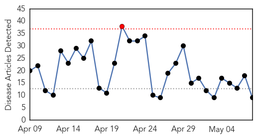
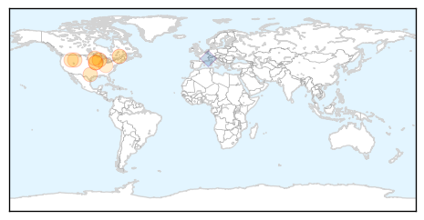
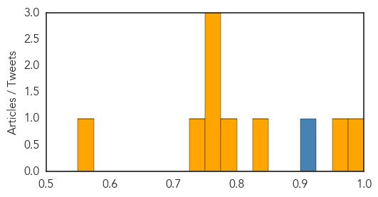

Influenza
30-Day Web Trend
1 alerts, 0 warnings

30-Day Twitter Trend
4 alerts, 0 warnings

Article Locations
Article Confidences
Top Articles:
- 0.993
- Ineffective flu vaccine partly responsible for spike in flu deaths
- 0.950
- Wisconsin senator joins calls for better funding to fight avian flu
- 0.826
- Avian influenza current outbreak is unlike any other
- 0.786
- Change in pattern of H5N2 spread raises questions
- 0.751
- May 8, 2015 Archives
- 0.751
- May 8, 2015 Archives
- 0.751
- May 7, 2015 Archives
- 0.730
- More than 5 million birds dead in Minn. from bird flu outbreak
- 0.566
- Infection control nurses step into spotlight
Top Tweets:
- 0.917
- If the pathogen that causes the disease is known, it should be part of the disease name (e.g. coronavirus, influenza virus, salmonella)
Measles
30-Day Web Trend
0 alerts, 0 warnings

30-Day Twitter Trend
0 alerts, 0 warnings

Article Locations

Article Confidences

Top Articles:
- 0.983
- Liberia’s Measles Outbreak: Gov't on Massive Immunization
- 0.975
- North Devon parents told to protect children following two confirmed measles cases
- 0.884
- 10 Counties Hit by Measles Outbreak
- 0.823
- Gov’t Launches Measles Campaign
- 0.792
- TRAVELLERS REMINDED TO HAVE MEASLES VACCINATION
- 0.757
- Low vaccination rates at schools put students at risk
- 0.723
- The 'V' word still a hot topic: 6 things to know as state proposes tougher vaccine rules for children
- 0.677
- Measles Vaccination Could Have Benefits against Other Infections
- 0.635
- UNICEF and EU begin airlift humanitarian supplies to Nepal
- 0.628
- Robert Kennedy Jr. Blasts Vaccine Science, Compares It To Tobacco Companies Denying Cancer Link
- 0.621
- Pilot whale beaches at KSC
- 0.574
- Measles Weaken Immune System for Up to 3 Years
- 0.562
- Scientists uncover new secret on measles vaccine
Top Tweets:
-
No tweets found for May 08, 2015